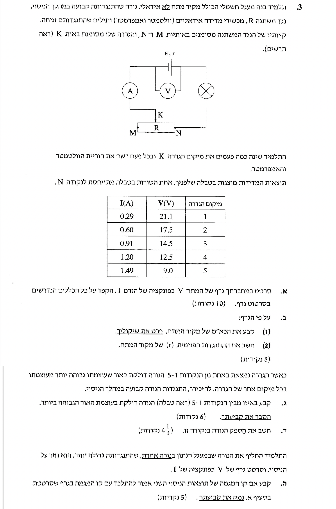
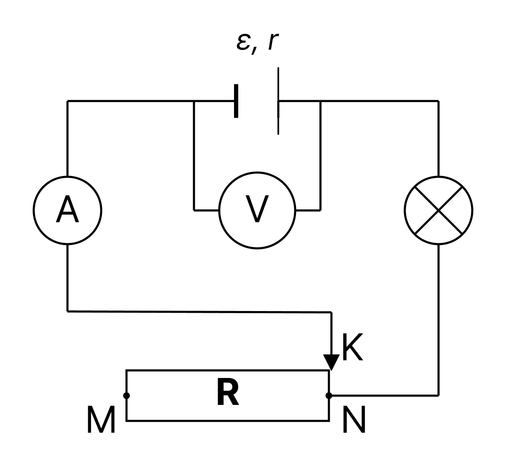

פתרון מודרך המנתח מקור מתח מעשי, נגד משתנה וקריאת גרפים, צעד-אחר-צעד.
בשאלה זו אנו מנתחים מעגל חשמלי הכולל מקור מתח לא אידיאלי (בעל התנגדות פנימית), המחובר לנורה ולנגד משתנה (ראוסטט) המאפשר לשלוט בזרם במעגל.
נקודת המפתח בשאלה טמונה בהבנת חיבורי המכשירים: מד הזרם מודד את הזרם הכולל במעגל \( I \), ואילו מד המתח מחובר במקביל למקור המתח ולכן מודד את מתח ההדקים שלו \( V_{ab} \). ניתוח מתח ההדקים כפונקציה של הזרם יאפשר לנו לחשוף את תכונות הסוללה (כא"מ והתנגדות פנימית).

מתח ההדקים של מקור מתח לא אידיאלי מתואר על ידי המשוואה שציינו. משוואה זו מתאימה לתבנית של פונקציה קווית, המאפשרת לנו לסרטט קו ישר שמייצג את התנהגות המעגל.
נסמן את חמשת נקודות המדידה במערכת צירים ונעביר ביניהן את הישר הקרוב אליהן ביותר (קו המגמה). שימו לב שהנקודות מתיישרות כמעט בצורה מושלמת לאורך קו יורד.
הגרף מציג קשר ליניארי יורד בין הזרם למתח ההדקים של הסוללה, בהתאמה לנוסחת מתח ההדקים.
המלצת זהב מחדר הבדיקה:
העדיפו לצייר תמיד בעזרת עיפרון וסרגל שקוף (המאפשר לראות את הנקודות שתחתיו). אם טעיתם או שהקו לא יצא מדויק מספיק, אל תנסו לקשקש ולתקן על הגרף הקיים! מחיקות וקשקושים יורידו לכם נקודות. פשוט סמנו X גדול על השרטוט השגוי, וסרטטו גרף חדש ונקי בעמוד הבא.
נשתמש במשוואת מתח ההדקים כדי לקשר בין תכונות הסוללה לבין המשוואה המתמטית של קו המגמה. בנוסף, נשתמש בנוסחת השיפוע כדי לחשב את גודל ההתנגדות הפנימית.
כפי שראינו, הפונקציה המתארת את הגרף היא \( V = -rI + \varepsilon \). בהשוואה למשוואת קו ישר מתמטית \( y = mx + b \), אנו מזהים כי:
כדי לחשב את שיפוע קו המגמה \( m \), נבחר שתי נקודות מרוחקות זו מזו מתוך קו המגמה עצמו (ולא מהטבלה, אלא אם הן מונחות עליו בדיוק). נחפש נקודות חיתוך עם הרשת שקל לקרוא ברמת דיוק הגיונית. נבחר למשל את הנקודות מהגרף: \( (0.30, 21.0) \) ו-\( (1.20, 12.0) \).
מכיוון ש- \( m = -r \), נקבל כי ההתנגדות הפנימית היא \( r = 10.0 \ \Omega \).
נציב את השיפוע שמצאנו ואת אחת מנקודות קו המגמה (למשל, השנייה) אל תוך משוואת הישר כדי לחלץ את ערכו של הכא"מ \( \varepsilon \):
מסקנה: (1) הכא"מ של המקור הוא \( 24.0 \text{ V} \). (2) ההתנגדות הפנימית שלו היא \( 10.0 \ \Omega \).
עוצמת האור של נורה תלויה באופן ישיר בהספק החשמלי הנצרך על ידה. מדף הנוסחאות, הספק חשמלי על נגד מוגדר בנוסחה זו.
מכיוון שהתנגדות הנורה קבועה, ההספק שהיא צורכת (ועוצמת הארתה) תלוי אך ורק בזרם החשמלי הזורם דרכה. ככל שגודל הזרם \( I \) יגדל, כך יגדל ההספק. לכן, עלינו לחפש בטבלה את המדידה בה הזרם הוא המקסימלי.
עיון בטבלת התוצאות מראה כי הזרם הגבוה ביותר נמדד בנקודה מספר 5, שבה \( I = 1.49 \text{ A} \).
הנורה מאירה בעוצמתה הגבוהה ביותר בנקודה מספר 5, משום שבנקודה זו זורם במעגל הזרם החשמלי המקסימלי.
ההספק החשמלי ניתן לחישוב גם על ידי המכפלה של המתח והזרם. חשוב להקפיד להציב את המתח הרלוונטי הנופל על הרכיב (הנורה במקרה שלנו).

הזרם מגיע למקסימום כאשר ההתנגדות החיצונית הכוללת במעגל היא מינימלית. כפי שניתן לראות באיור, הגררה \( K \) נמצאת בדיוק בקצה \( N \). במצב זה הנגד המשתנה אינו חלק מהמסלול הסגור של המעגל, ולכן לא זורם בו זרם כלל והוא גם אינו מוסיף התנגדות למעגל. לכן, בנקודה זו ההתנגדות החיצונית של המעגל היא הקטנה ביותר האפשרית, ומכאן שנקודה 5 בטבלה היא בהכרח המצב שבו הגררה נמצאת בנקודה \( N \).
מכיוון שלפי האיור הנגד המשתנה אינו משתתף כלל במעגל בנקודה זו, הרכיב היחיד במעגל החיצוני הוא הנורה. לכן מתח ההדקים שמודד הוולטמטר (\( 9.0 \text{ V} \)) נופל כולו על הנורה, ולכן \( V_{bulb} = 9.0 \text{ V} \). כעת נוכל לחשב את ההספק:
מסקנה: הספק הנורה בנקודה זו הוא \( 13.4 \text{ W} \) (מעוגל ל-3 ספרות מהותיות).
משוואת קו המגמה של הגרף תלויה אך ורק בתכונות הפנימיות של מקור המתח (הכא"מ וההתנגדות הפנימית).
גרף המתח כפונקציה של הזרם, עבור מקור מתח נתון, מתאר את "תעודת הזהות" של המקור עצמו. משוואת הישר תלויה בשני פרמטרים בלבד: הכוח האלקטרו-מניע (\( \varepsilon \)) וההתנגדות הפנימית (\( r \)).
החלפת הנורה משנה את ההתנגדות הכוללת במעגל (\( R_{ext} \)). כתוצאה מכך, בכל מצב נתון של הגררה, הזרם החשמלי \( I \) שייווצר יהיה שונה, ובהתאם גם מתח ההדקים \( V \) יהיה שונה. אולם, הקשר המתמטי בין הזרם למתח המוכתב על ידי הסוללה אינו משתנה.
הנקודות החדשות שיימדדו פשוט ימוקמו במיקומים אחרים על גבי אותו ישר מתמטי בדיוק (הן יהיו מרוכזות יותר באזורים של זרמים נמוכים יותר, בשל ההתנגדות המוגדלת של הנורה החדשה).
קביעה: כן, קו המגמה של הניסוי השני יתלכד לחלוטין עם קו המגמה של סעיף א'. הנימוק הוא שמשוואת הישר תלויה אך ורק בתכונות הסוללה הפנימיות, שלא השתנו, ולא ברכיבי המעגל החיצוני.